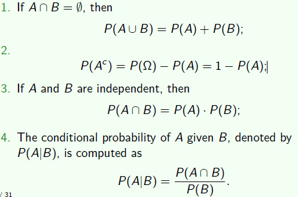

Basics of Probability Theorylec1
The Calculus of Probabilities
Probability operators

Probability properties
- If P is a probability function, A and B are any two sets in B, then
- P(∅)=0, where ∅ is the empty set
- P(A)≤1
- P(B∩Ac)=P(B)−P(A∩B)
- P(A∪B)=P(A)+P(B)−P(A∩B)
- If A⊂B, then P(A)≤P(B)
- Events A1 and A2 are pair-wise independent (statistically independent) if and only if
- P(A1∩A2)=P(A1)P(A2)
- mutually independent:
- P(A1∩A2∩...∩An)=P(A1)P(A2)...P(An)
- Note the difference between independent and mutually exclusive
- mutually exclusive: cov(X,Y)=0
- independent: P(X,Y)=P(X)P(Y)
- Let AandB be events with P(B)>0. The conditional probability of A givenB, denoted by P(A∣B), is defined as
- P(A∣B)=P(B)P(A∩B)
- Total probability theorem:
- P(A)=P(B1)P(A∣B1)+P(B2)P(A∣B2)+P(B3)P(A∣B3)
- P(A)=i=1∑nP(Bi)(A∣Bi)
- Bayes' Theorem
- P(Bi∣A)=k=1∑nP(A∣Bk)P(Bk)P(A∣Bi)P(Bi)
Counting
- inclusion-exclusion
- ∣A∪B∣=∣A∣+∣B∣−∣A∩B∣
- Permutations and combinations
- P(n,m)=(n−m)!n!
- C(n,m)=m!(n−m)!n!
Random Variablelec2
- A random variable (r.v.) X is a function from sample space of an experiment to the set of real numbers in R:
- ∀w∈Ω,X(w)=x∈R
- Note that a random variable is a function, and not a variable, and not random.
Cumulative distribution function
- The cdf of a r.v denoted by Fx(X) is defined by :
- FX(x)=PX(X≤x)
- limx→−∞=0
- limx→∞=1
- F(x) is nondecreasing function of x
- F(x) is right-continuous
- two r.v.s that are identically distributed are not necessarily equal.
Probability mass function
- The pmf of a discrete r.v. X is given by fX(x)=P(X=x)
Probability density function
- The probability density function or pdf, fX(x), of a continuous r.v. X is the function that satisfies:
- FX(x)=∫−∞xfX(t)dt
- X has a distribution given by FX(x) is abbreviated symbolically by X∼FX(x) or X∼fX(x).
Joint distributionlec3
- P((X,Y)∈A)=∑(x,y)∈Af(x,y)
- P((X,Y)∈A)=∫∫Af(x,y)dxdy
- fX(x)=∫−∞+∞fX,Y(x,y)dy
- ∂x∂y∂2F(x,y)=f(x,y)
- f(x∣y)=fY(y)f(x,y)
- if f(x,y)=fX(x)fY(y), then X,Y are independent.
- 若变量可分离，则不需要计算边际分布，直接可判断相互独立
Bivariate function
- (X,Y) be a bivariate r.v, consider a new bivariate r.v (U,V), define by U=g1(X,Y) and V=g2(X,Y)
- B={(u,v)∣u=g1(x,y),v=g2(x,y),(x,y)∈A}
- Auv={(x,y)∈A∣u=g1(x,y),v=g2(x,y)}
- fu,v=P(I=u,V=v)=P((X,Y)∈Auv)=∑(x,y)∈AuvfX,Y(x,y)
J=∣∣∣∣∂u∂x∂u∂y∂v∂x∂v∂y∣∣∣∣
- fu,v=fX,Y(h1(u,v),h2(u,v))∣J∣
- 这是用反函数求解的方法，若有些题无法用反函数求解，则使用累计密度函数带入计算
Expectation & covariancelec4
Expectation value
- denoted as R(g(X)):
E(g(X))=∫−∞+∞g(x)fX(x) if X is continuous =x∈X∑g(x)P(X=x) if X is discrete
- note: expectation is not always exist
- Cauchy r.v, the pdf:
- fX(x)=π(1+x2)1
- E(X)=∞
Linearity of expectations
- E(ag1(X)+bg2(X)+c)=aE(g1(X))+bE(g2(X))+c
- if a≤g1(x)≤b for all x, then a≤E(g1(X))≤b
- can use uniform distribution to form other distribution: exponential, normalization, which is actually do in computer
- suppose X∼U(0,1),let Y=g(X)=−logX
- FY(y)=P(Y≤y)=P(−logX≤y)=PX(x≥e−y)=1−e−y
- fY(y)=e−y
- so Y∼exp(1)
Moment
- For each integer n, the n−th moment of X, is μn=E(Xn)
- The n−th central moment of X, μn=E(X−μ)n
Variance
Nonlinearity of variance
- var(aX+b)=a2var(X)
- if X and Y are tow independent r.v.s on a sample space Ω, then:
- var(X+Y)=var(X)+var(Y)
Independence
- if X and Y are independent r.v.s on a sample space Ω, then:
- E(XY)=E(X)E(Y)
- var(X+Y)=var(X)+var(Y)
- var(X−Y)=var(X)+var(Y)
Moment Generating Function
- can be used to calculate moment
- the moment generating function of X, denoted by MX(t), is:
- MX(t)=E(etX)
- MaX+b(t)=ebtEX(at)
- is applied to Chernoff bound
- if the expectation dose not exist, the moment generating function dose not exist.
- X is continuous, MX(t)=∫−∞+∞etxfX(x)dx
- X is discrete, MX(t)=∑xetxP(X=x)
Theorem
- if X has moment generating function MX(t), then :
- E(Xn)=Mn(n)(0)
- where we define:
- MX(n)(0)=dtndnMX(t)∣t=0
- can be used to calculate Gamma E(X)
Property
- MaX+b(t)=ebtMX(at)
Covariance
- The covariance and correlation of X and Y are the numbers defined by:
- Cov(X,Y)=E((X−μX)(Y−μY))
- ρXY=σXσYCov(X,Y)
- Cov(X,Y)=E(XY)−μXμY
- if X,Y are independent r.v.s, then Cov(X,Y)=0 and ρXY=0
- Var(aX+bY)=a2Var(X)+b2Var(Y)+2abCov(X,Y)
- 相关系数只能说明是否存在线性关系，若等于0，不能说没有关系。
- 但若使用ρ(X2,Y)，也可以衡量。
- 由于任何函数都可以用多项式拟合，因此都可以用相关系数衡量
Bivariate normal pdf
- f(x,y)=(2πρXρY1−ρ2)−1⋅exp(−2(1−ρ2)1((σXx−μx)2−2ρ(ρXx−μx)(ρYy−μY)+(σYy−μY)2))
- marginal distribution
- X∼N(μX,σX2)
- Y∼N(μY,σY2)
- ρ=ρXY
- aX+bY∼N(aμX+bμY,a2σX2+b2σY2+2abρσXσY)
conditional expectationlec4
Theorem
- E(X)=E(E(X∣Y))
- Var(X)=E(Var(X∣Y))+Var(E(X∣Y))
Mixture distribution
Binomial-Poisson hierarchy
- if X∣Y∼Binomial(Y,P),Y∼Possion(λ):
- P(X=x)=∑P(X=x,Y=y)=∑P(X=x∣Y=y)P(Y=y)=x!(λP)xeλP
- ∴X∼Possion(λP)
- using E(X)=E(E(X∣Y)), can easily get E(X)=E(pY)=pλ
Beta-binomial hierarchy
if X∣P∼Binomial(n,p),P∼β(α,β)
so E(X)=E(E(X∣P))=E(np)=α+βnα